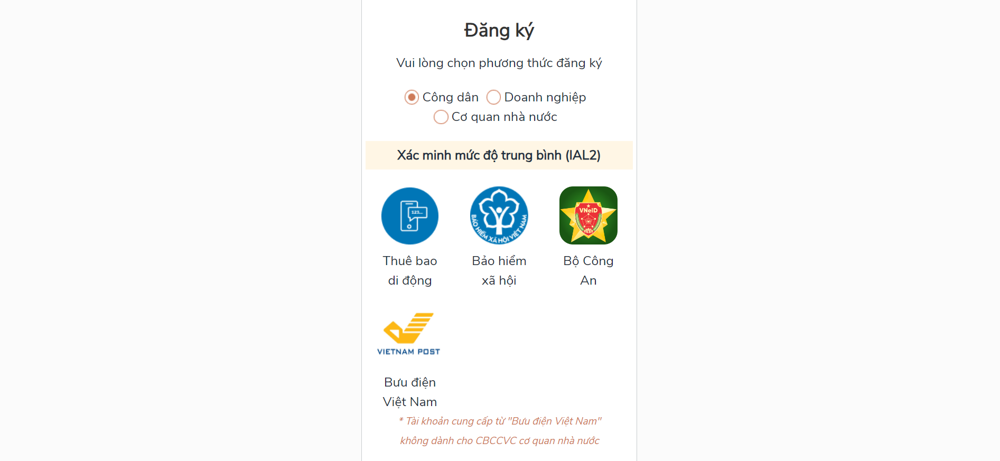
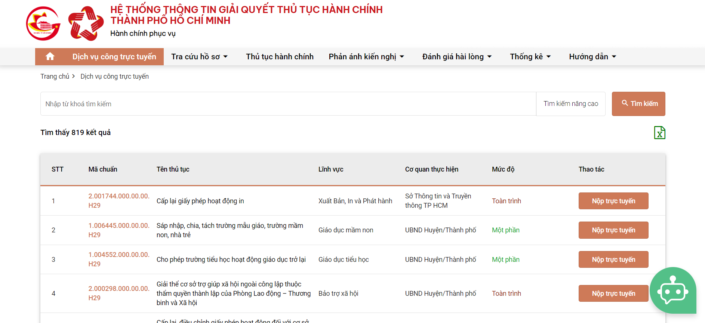
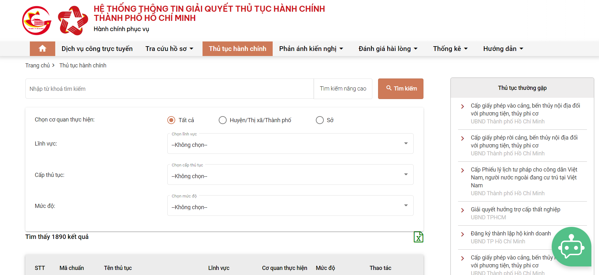
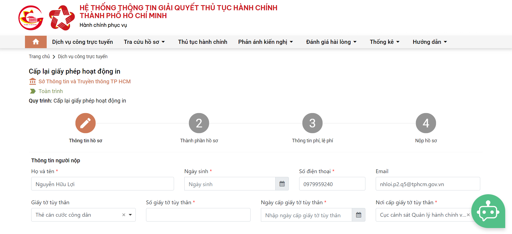

Hiện nay, để thuận tiện hơn khi thực hiện các thủ tục hành chính, nhiều tỉnh, thành phố đã triển khai đăng ký trực tuyến. Dưới đây là hướng dẫn chi tiết thủ tục xác nhận tình trạng hôn nhân online tại TP.HCM.
Giấy xác nhận tình trạng hôn nhân hay thường được gọi là Giấy xác nhận độc thân là loại giấy tờ được sử dụng để xác định tình trạng hôn nhân của một người: Đã kết hôn, chưa đăng ký kết hôn với ai, trước đây đăng ký kết hôn nhưng hiện tại đã ly hôn và hiện chưa kết hôn với ai…
Việc xác nhận tình trạng hôn nhân có ý nghĩa quan trọng trong việc xác định quyền, nghĩa vụ và chế độ tài sản chung, riêng với vợ, chồng của người đó. Qua đó, tạo điều kiện thuận lợi khi giao dịch dân sự.
Đồng thời, Điều 22 Nghị định 123/2015/NĐ-CP của Chính phủ quy định việc xin Giấy xác nhận tình trạng hôn nhân còn nhằm mục đích kết hôn. Bởi theo Điều 2 Luật Hôn nhân và Gia đình, nguyên tắc cơ bản của chế độ hôn nhân tại Việt Nam là:
Hôn nhân tự nguyện, tiến bộ, một vợ một chồng, vợ chồng bình đẳng
Do đó, việc xin Giấy xác nhận tình trạng hôn nhân là một thủ tục vô cùng quan trọng khi thực hiện các giao dịch dân sự như vay vốn, mua bán… và khi muốn đăng ký kết hôn.
Việc xác nhận tình trạng hôn nhân ở trong nước được thực hiện bởi Ủy ban nhân dân (UBND) cấp xã nơi thường trú của công dân. Nếu không có nơi thường trú mà có đăng ký tạm trú thì UBND cấp xã nơi người đó tạm trú thực hiện cấp Giấy này.
Đồng thời, quy định này cũng áp dụng để cấp Giấy xác nhận cho công dân nước ngoài và người không có quốc tịch cư trú tại Việt Nam nếu có yêu cầu (Điều 21 Nghị định 123/2015/NĐ-CP của Chính phủ).
Ngoài ra, khi công dân Việt Nam cư trú ở nước ngoài có yêu cầu xin xác nhận tình trạng hôn nhân có yếu tố nước ngoài thì theo quy định tại Điều 19 Thông tư liên tịch 01/2016/TTLT-BNG-BTP, cơ quan có thẩm quyền thực hiện gồm:
- Xác nhận thời gian ở trong nước: UBND cấp xã nơi người đó cư trú trước khi xuất cảnh;
- Xác nhận thời gian ở nước ngoài: Cơ quan đại diện ngoại giao, cơ quan đại diện lãnh sự của Việt Nam ở nước mà người đó cư trú.
Bước 1: Truy cập địa chỉ https://dichvucong.hochiminhcity.gov.vn/vi/
Bước 2: Nhấn "Đăng ký" và chọn "Công dân". Sau đó chọn 1 trong 4 "Xác minh mức độ trung bình (ILA2)"
Bước 3: Sau khi "Đăng nhập" thành công, chọn "Dịch vụ công trực tuyến"
Bước 4: Tại mục "Tìm kiếm nâng cao", chọn các mục “Quận, huyện, thị xã”; “Lĩnh vực”; “Phường, xã, thị trấn”; “Mức độ”
Bước 5: Điền đầy đủ thông tin vào tờ khai cấp Giấy xác nhận tình trạng hôn nhân online. Những mục có dấu * là những mục bắt buộc phải điền đầy đủ thông tin theo yêu cầu.
Bước 6: Đọc lại và kiểm tra thông tin để bảo đảm các thông tin vừa nhập là chính xác. Sau đó, chọn mục “Tôi xin chịu trách nhiệm trước pháp luật về lời khai trên”.
Nếu muốn in tờ khai thì chọn “In mẫu”. Nếu không thì chọn “Tiếp tục” để nhập mã xác nhận.
Bước 7: Sau khi kiểm tra lại thông tin một lần nữa, thì bấm “Hoàn tất” để thực hiện xong quá trình đăng ký của mình.
Bước 8: Sau khi thực hiện xong việc đăng ký online, người có yêu cầu xin xác nhận tình trạng hôn nhân nên lưu lại mã hồ sơ để tra cứu tình trạng tiếp nhận cũng như tiến độ xử lý hồ sơ của mình.
Nếu hồ sơ chưa đầy đủ, hệ thống sẽ có hướng dẫn chi tiết để bổ sung hoàn chỉnh.
Trên đây là trình tự, thủ tục đăng ký online xin xác nhận tình trạng hôn nhân tại TP.HCM. Người có yêu cầu nên thường xuyên kiểm tra hòm thư hoặc số điện thoại để nhận thông báo từ cơ quan có thẩm quyền. Khi có lịch hẹn trả kết quả thì mang theo giấy tờ, hồ sơ gốc để đối chiếu.
Quyết định 333/QĐ-TTg 2024 Kế hoạch thăm dò, khai thác, chế biến các loại khoáng sản thời kỳ 2021-2030.
Thông tư 25/2024/TT-BTC bãi bỏ TT 83/2014/TT-BTC hướng dẫn thực hiện thuế GTGT theo Danh mục hàng hóa nhập khẩu.
Công văn 1702/TCT-CS 2024 về chính sách tiền sử dụng đất đối với Dự án đầu tư xây dựng Khu nhà ở xã hội.
Công văn 1681/TCT-QLN 2024 thực hiện khoanh nợ đối với người nộp thuế bị yêu cầu thủ tục phá sản.
Kế hoạch 1462/KH-UBND Bình Thuận 2024 thực hiện chiến lược quốc gia về phòng, chống tác hại thuốc lá đến năm 2030.